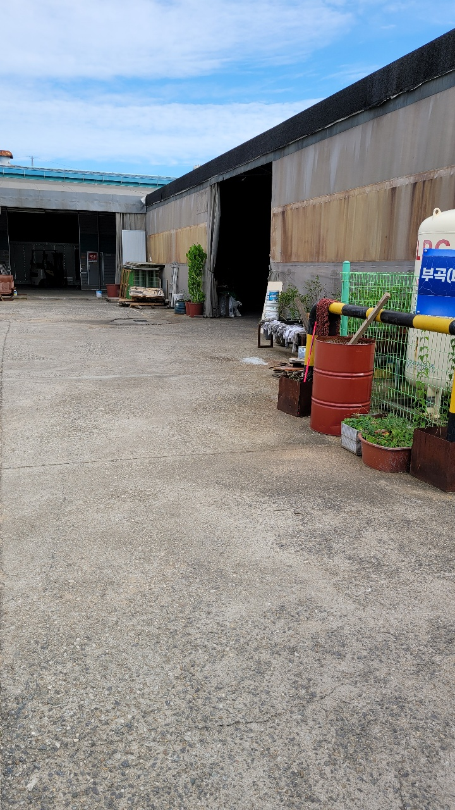
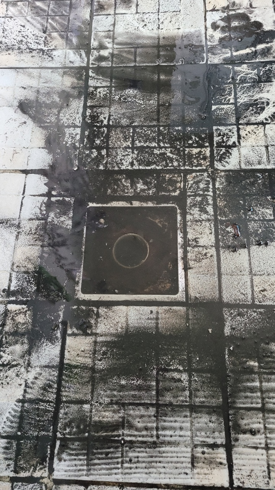
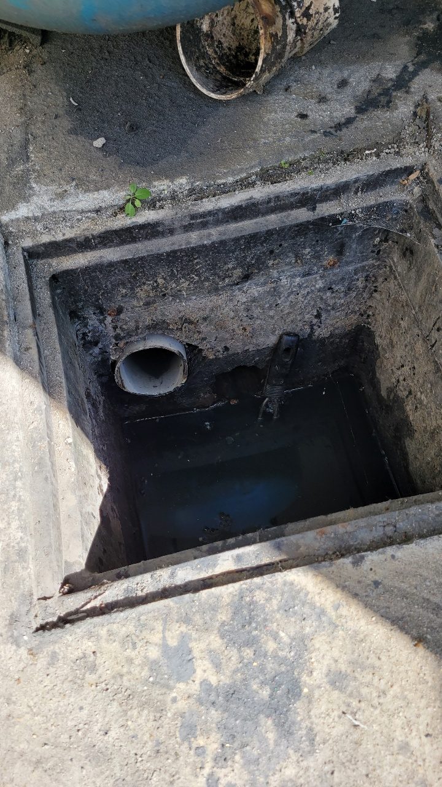
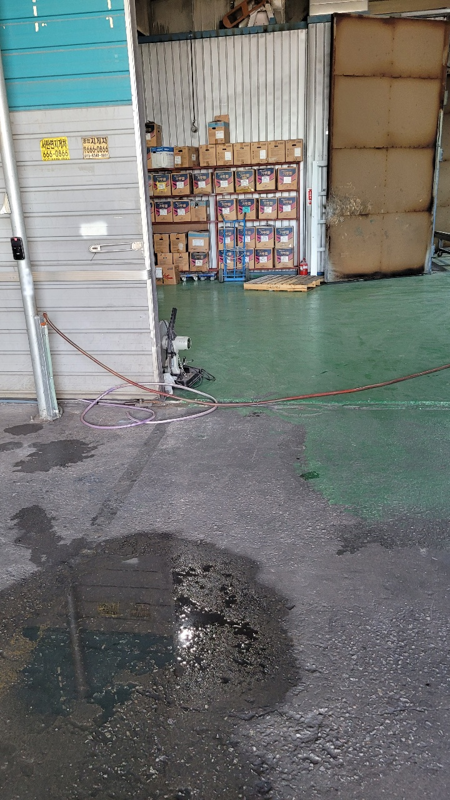
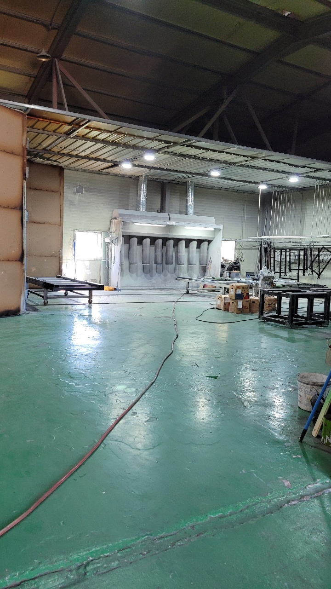
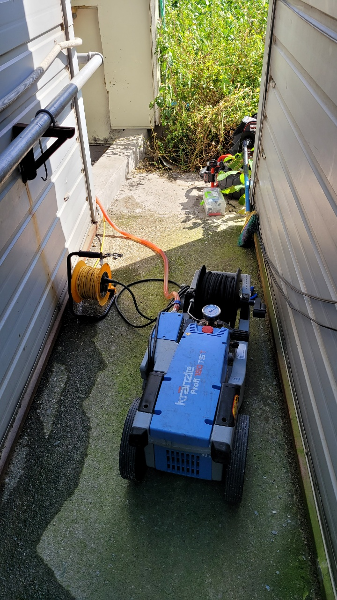

🏠 송탄동 식당 주방 하수구 누수 평택 서정동 하수도 배관 공사 전문 업체
평택 하수구막힘 전문 시공 후기

📋 작업 개요
- 위치: 평택
- 서비스 유형: 하수구막힘, 배관막힘, 집수정막힘, 누수수리, 뚫는업체, 배관청소, 고압세척, 설비공사
- 작업 일시: 2025. 6. 3. 19:54
- 업체명: 하수구수사대 (010-5615-2118)
🔍 문제 상황
안녕하세요
요즘 가을날씨답게 선선하고 나들이가기
좋은계절입니다
오늘은 평택에 위치한 공장 하수구막힘 의뢰가
있어서 하수구수사대가 출동하였습니다.
평택 송탄 공장 하수구막힘 배관청소
일요일이라 직원들은 퇴근하고 사장님께서
기다리고 계서서 공장이 한가롭네요
도착하였을때 화장실 하수구막힘 으로 물이 전혀 내려가지
않고 있었고 사장님께서 뚫는 스프링 장비를
빌려서 직접 해보시려고 2시간동안 해봤지만
장비가 5미터도 진입이 안된다고 하셨습니다.
6개월전에 동네설비기사분에게 맡겨 뚫은적이
있다고 하시는데 6개월만에 또 막혀서
제대로 해결하고자 하수구수사대를 찾아주셨습니다.
평택 송탄 공장 하수구막힘 배관청소

🔎 원인 분석
💡 전문가 진단: 하수구수사대010-2340-2118서울,경기,인천 전지역
우선 집수정으로 추정되는 곳을 찾았는데
집수정바닥은 모래가 많고 배관기울기도 역구배로
되어있는것이 한눈에띄었습니다.
손으로 넣어보니 모래가 많이 쌓여 배관밖으로 나오지 않고
있는 상황이라 일반 장비로는 해결이 되지 않기때문에
통수 이후 모래를 빼내는 작업을 하기로하였습니다.
배관에 모래나 흙 또는 죽상태처럼 음식물이 쌓여있으면
스프링장비로는 이물질을 제거하기가 힘들지만
간혹 뚫리는 경우도 있습니다.
하지만 얼마가지않아 또 막힐 확률이 높아
반복적인 비용이 들어가기 때문에 한번 하실때
이물질은 제거하는것이 좋습니다.
배관청소를 위해 전기고압세척기를 연결하여
배관에 고압호스를 넣어 모래를 빼내는 작업을 진행하였습니다.
하수구수사대
010-2340-2118
서울,경기,인천 전지역

🔧 작업 과정
모래가 배관으로 들어가는 이유는 공장화장실을 세면실가
공용으로 사용하시는데 신발을 신고 들어가다보니
모래나 쇳가루 같은 이물질들이 오랜기가
쌓이고 나오는 출수구배관자체도 기울기가
좋지않아 집수정으로 미처 나오지 못하여 배관에
머물러 있었습니다.
모래같은 이물질은 장비가 한번 왔다갔다 한다고 나오지않기에
여러차례반복 작업을 해야합니다.
중간중간 배관내시경카메라를 보며 촬영을 했는데
4개동 공장이 하나의 집수정과 정화조구조로 되어있다보니
기울기가 상당히 좋지 않은 상태였습니다.
다행인건 음식물을 버리지않아 배관에 기름기는 거의 없었지만
음식물까지 배출되는 배관이였다면 자주 막히는 구조입니다.
배관과 집수정에서 많은 양의 모래,흙이 나왔습니다.
오랜기간 퇴적되어 배관에 머물러 있어서 그런지
검은흙들이 대부분이였어요.
공장이라 쇳가루도 조금씩 섞여있습니다.
고객님들께서도 보시고는 화장실,세면실을 신발을
벗고 들어가야겠다고 하시네요^^
배관청소를 하게되면 내시경카메라롤 확인하는것은 필수입니다
가끔 고객님들께서 신경을 안쓰시거나
현장에 없는경우 대충하고 가는 설비기사님들이
계신데 꼭 전과후를 현장에서 보시는것을 추천드립니다.
간혹 1년도 안되서 막혔는데 as가 안되는 곳도 있기때문입니다.
저희 하수구수사대는 배관세척후 1년 as를 보증해 드리고 있습니다.
영상에 잘 보일지 모르겠지만 물이 오르막처럼 되어있어


✅ 작업 완료
물이 밀려나오는 구조입니다 ㅜㅜ
그래도 배관을 깨끗히 청소했기때문에
앞으로 사용하시는데 전혀 지장은 없습니다^^
하수구수사대는 전기고압세척과 엔진고압세척장비 등등
국내 최고사양의 장비를 보유하고 있습니다.
서울,경기,인천 전지역에서 활동을
하고있습니다. 많은 관심 부탁드립니다^^




⚠️ 베란다 누수 및 방수 관리 방법
- ✅ 비가 많이 올 때 창틀 주변이나 아래층 천장에 얼룩이 생기는지 정기적으로 확인해 보세요.
- ✅ 우수관 주변 실리콘 마감이 들뜨거나 깨진 틈새가 있는지 손상 여부를 수시로 체크하세요.
- ✅ 베란다 바닥 타일의 줄눈(메지)이 소실되면 그 틈으로 물이 침투하여 누수가 유발됩니다.
- ✅ 누수 의심 증상 발견 시 방치하면 아래층 손실이 커지므로 즉시 전문가의 진단을 받으십시오.
💡 핵심 정리
- 확실한 장비 작업(내시경 점검 및 샤프트 스케일링)으로 원인을 뿌리 뽑습니다.
- 작업 후 1년 이내에 동일한 부위 재발 시 100% 무상 A/S 서비스를 보장합니다.
- 서울 · 경기 · 인천 전 지역에 24시간 언제든 긴급 출동할 수 있도록 항시 대기 중입니다.
❓ 자주 묻는 질문 (FAQ)
🚨 평택 하수구막힘 문제로 고민이신가요?
정확한 원인 진단과 확실한 시공으로 재발 없는 해결을 약속드립니다.
24시간 긴급 출동 | 서울 · 경기 · 인천 전지역 | 1년 내 재발 시 무상 A/S